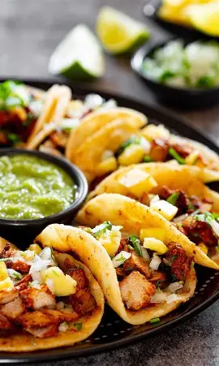

Tacos al Pastor

Ingredientes
- 1 kg de carne de cerdo
- 3 chiles guajillo
- 2 chiles anchos
- 1/2 taza de jugo de naranja
- 1/4 taza de vinagre
- 4 dientes de ajo
- 1 cucharada de achiote
- Tortillas de maíz
- Piña fresca
- Cilantro y cebolla
- Limones
- Sal y pimienta
Preparación
1. Remoja los chiles en agua caliente por 15 minutos.
2. Licúa los chiles con naranja, vinagre, ajo, achiote y especias.
3. Marina la carne con la mezcla por 4 horas.
4. Cocina la carne con piña en una parrilla o sartén.
5. Pica la carne y sirve en tortillas con cilantro, cebolla y limón.
Tiempo: 30 minutos
Porciones: 6 personas